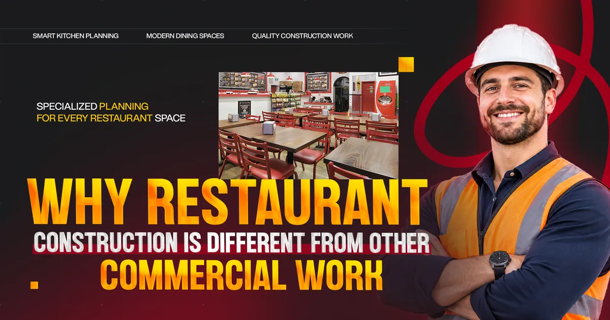
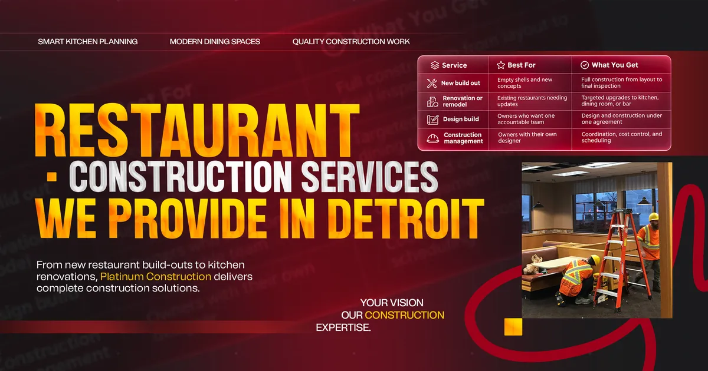
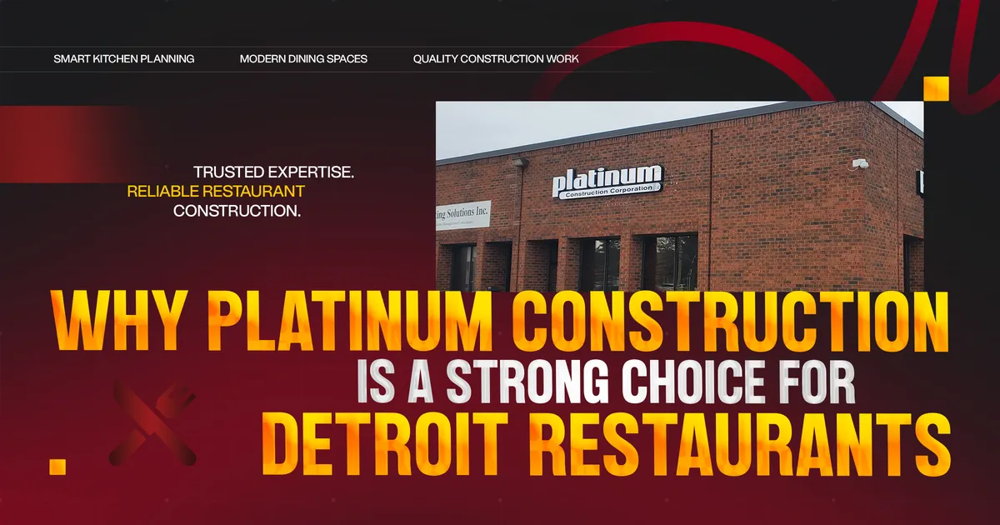
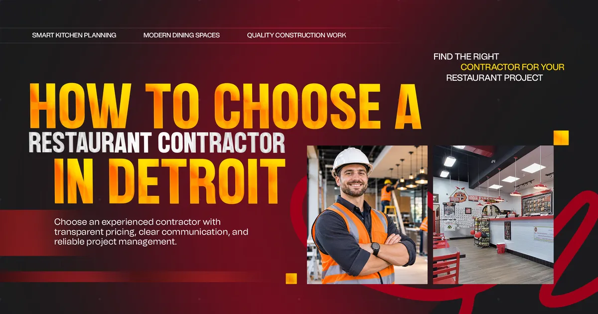

But a great menu and a great location only get you to the starting line. The space still has to be built, and a restaurant is one of the hardest commercial spaces to get right. Kitchens, ventilation, plumbing, health rules, and guest comfort all need to work together on day one.
This guide explains what restaurant construction involves in Detroit, how to plan it, and what to look for in a commercial construction company in Detroit before you sign a contract.

Why Restaurant Construction Is Different From Other Commercial Work
A restaurant is a food factory and a dining room under one roof. That combination creates technical demands that offices and retail stores simply do not have.
The Kitchen Drives Everything
Your cooking equipment decides where gas lines, electrical circuits, floor drains, and exhaust hoods go. Change the equipment list halfway through and you may need to reopen walls and redo work. A commercial general contractor in Detroit with restaurant experience will push you to finalize the kitchen plan early, because early decisions are cheap and late ones are not.
Ventilation and Grease Management Are Not Optional
Cooking produces heat, smoke, and grease. Exhaust hoods, makeup air, and grease handling must be sized for your actual menu. Undersized systems lead to smoky dining rooms, uncomfortable staff, and failed inspections.
Health and Safety Rules Shape the Design
Surfaces in food areas need to be washable and durable. Handwashing stations, equipment spacing, and drainage all follow food safety standards. Your contractor should plan for these requirements from the start, not discover them at final inspection.

Restaurant Construction Services We Provide in Detroit
Platinum Construction supports restaurant owners with a full range of commercial construction services in Detroit, from fresh build outs to focused kitchen upgrades.
New Restaurant Build Out
This is the full journey from an empty shell to an operating restaurant. It includes layout planning, structural and mechanical work, kitchen installation, dining room finishes, lighting, and final inspections. Commercial building construction in Detroit often starts in older buildings, so a careful site assessment comes first.
Restaurant Renovation and Remodeling
Many owners already have a space that needs a refresh. Commercial remodeling contractors can update the dining room, rebuild the bar, modernize the kitchen, or reconfigure the floor plan to seat more guests. A commercial renovation company should inspect the existing systems before pricing anything, because older wiring and plumbing are common hidden costs.
Design Build for Restaurants
With a commercial design build contractor in Detroit, one team handles design and construction together. That means faster decisions, fewer gaps between drawings and reality, and one group accountable for the budget and schedule.
Construction Management
If you already have an architect or designer, commercial construction management provides a dedicated lead who coordinates trades, tracks costs, schedules inspections, and keeps you informed.
The table below shows how the main services compare.
| Service | Best For | What You Get |
|---|---|---|
| New build out | Empty shells and new concepts | Full construction from layout to final inspection |
| Renovation or remodel | Existing restaurants needing updates | Targeted upgrades to kitchen, dining room, or bar |
| Design build | Owners who want one accountable team | Design and construction under one agreement |
| Construction management | Owners with their own designer | Coordination, cost control, and scheduling |
What Goes Into a Restaurant Build
Owners are often surprised by how many trades work inside a restaurant project. Here is a quick look at the main elements.
Kitchen Construction
Plumbing rough in, gas and electrical connections, exhaust hood installation, floor drains, and durable finishes all happen here. This phase needs careful sequencing so each trade has a clear space to work.
Front of House Build
The dining room carries your brand. Flooring, ceilings, lighting, acoustics, seating layout, and accessibility all affect how guests feel. A bar adds plumbing and electrical needs of its own.
Mechanical, Electrical, and Plumbing
Heating, cooling, power, and water systems must support peak service hours, not quiet afternoons. Good planning prevents breakers from tripping on a busy Friday night.
Permits and Inspections
Commercial restaurant projects in Detroit go through city permit and inspection steps, plus food service approvals. Timelines depend on the scope of work, so building permit planning into the schedule from the beginning protects your opening date.
A Realistic Restaurant Construction Timeline
Every project is different, but this table shows the typical flow.
| Stage | What Happens | Typical Duration |
|---|---|---|
| Planning and site review | Concept, equipment list, building assessment | 2 to 4 weeks |
| Design and estimating | Layout, drawings, itemized pricing | 2 to 4 weeks |
| Permits and approvals | City review and food service approvals | Varies by scope |
| Construction | Demolition, rough in, kitchen, finishes | 3 to 5 months |
| Inspections and handover | Final approvals and walkthrough | 1 to 2 weeks |
Treat these as planning ranges and confirm real dates with your contractor.

Why Platinum Construction Is a Strong Choice for Detroit Restaurants
Platinum Construction knows restaurant work well. Our portfolio includes completed projects for Chipotle Mexican Grill, Starbucks, Edo Japan, and Tim Hortons across Ontario. These brands demand precise specifications, tight timelines, and consistent quality, and those same standards matter to every independent restaurant owner in Detroit.
Here is what you can expect from our team.
A dedicated project manager coordinates every trade and keeps communication clear.
Written, itemized estimates show exactly where your money goes.
Permits and inspections are planned as part of the schedule.
Problems are raised early with options, not hidden until the end.
We also understand that every city has its own rules. For each project, we learn the local requirements and plan around them, so you are never left guessing.

How to Choose a Restaurant Contractor in Detroit
A few direct questions reveal a lot.
Have you built restaurants or commercial kitchens, and can I see them?
Can I speak with past restaurant clients?
Is your estimate written and itemized?
Who manages my project day to day?
How do you handle permits and health approvals?
What is your plan for unexpected problems in an older building?
Confident, specific answers are a good sign. Vague answers deserve caution.
Frequently Asked Questions
What does a restaurant construction company in Detroit do?
It plans and builds restaurant spaces, including kitchens, dining rooms, mechanical systems, permits, and inspections.
How long does it take to build a restaurant?
Most projects take several months from planning to opening, depending on size, scope, and permit timing.
Should I hire a restaurant specialist or a general contractor?
Choose a contractor with real restaurant experience, because kitchens, ventilation, and health rules are easy to underestimate.
What is the difference between design build and construction management?
Design build combines design and construction in one contract. Construction management coordinates the build when you already have a separate designer.
Do I need permits for a restaurant renovation in Detroit?
In most cases yes. Structural, electrical, plumbing, and mechanical work typically needs permits, and your contractor should plan for them early.
How can I avoid budget surprises in an older building?
Ask for a site assessment, a written itemized estimate, and a contingency of ten to fifteen percent.
How do I start a project with Platinum Construction?
Visit platinumconstruction.com to request a consultation. We will review your concept, space, and timeline.
Final Information for the Restaurant Construction Service Company in Detroit
A strong restaurant begins with a well built space. The right contractor listens first, plans carefully, communicates openly, and delivers a kitchen and dining room that work from opening night.
If you are searching for a commercial construction company in Detroit to build or renovate your restaurant, Platinum Construction is ready to talk through your project. Visit platinumconstruction.com to start the conversation today.